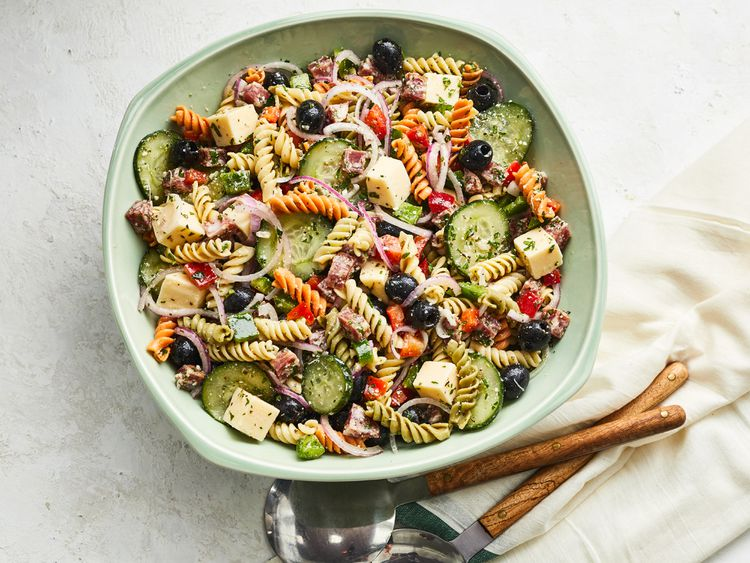
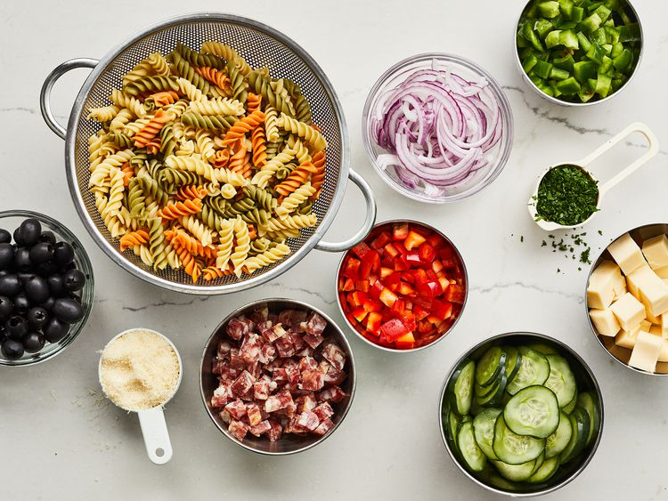
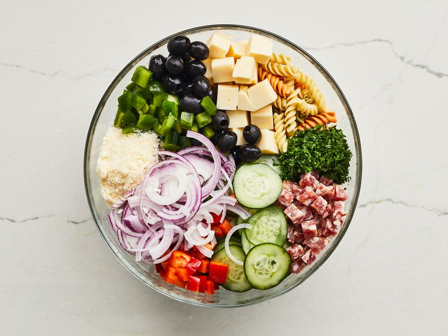
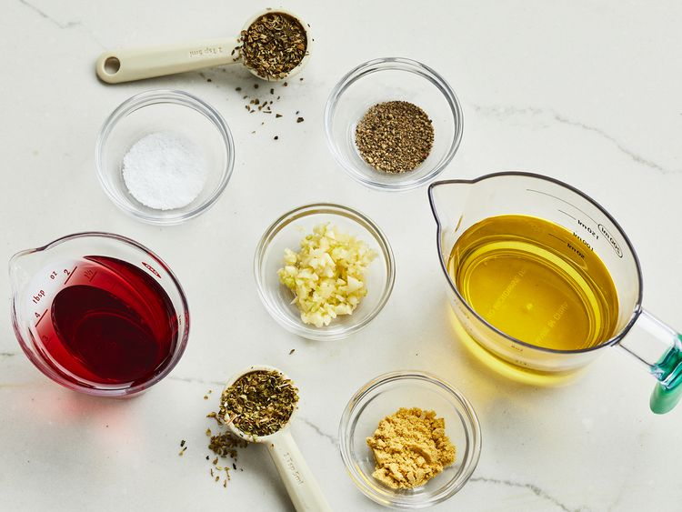
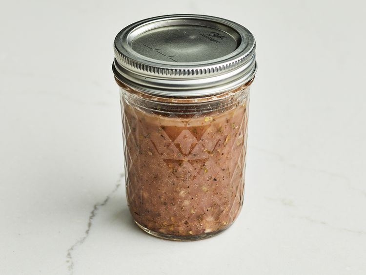

Pasta Salad with Homemade Dressing
Description
A homemade pasta salad dressing elevates this simple Italian pasta salad loaded with veggies, cheese, pepperoni, and olives. Serve it right away or make ahead for packed lunches, picnics, or summer barbecues.
- Prep Time: 30 mins
- Cook Time: 15 mins
- Total Time: 45 mins
- Servings: 8
Looking for a crowd-pleasing pasta salad recipe that everyone will love? You've come to the right place! Plus, this simple recipe comes with a homemade pasta salad dressing that makes the dish impossible to resist.
How to Make Pasta Salad With Homemade Dressing
You'll find the full, step-by-step recipe below — but here's what you can expect when you make this top-rated pasta salad with dressing recipe:
Make Pasta Salad
Boil rotini in lightly salted water for 8 to 10 minutes. Drain, rinse in cold water, then drain again. Transfer the cooked pasta to a large bowl. Toss with pepperoni, provolone cheese, red onion, cucumber, bell peppers, olives, parsley, and Parmesan cheese.
Make Pasta Salad Dressing
Mix olive oil, vinegar, garlic, basil, oregano, ground mustard, salt, and pepper in a jar with a lid. Tightly seal the jar, then shake until combined.
Combine and Chill
Pour the dressing into the bowl with the pasta salad. Toss until well-combined. You can serve immediately, but we recommend allowing the pasta salad to chill in the fridge for about eight hours before serving. This will give the flavors time to meld.
Ingredients
Pasta Salad:
- 1 (8 ounce) package uncooked tri-color rotini pasta
- 6 ounces pepperoni sausage, diced
- 6 ounces provolone cheese, cubed
- 1 medium red onion, very thinly sliced and cut into 1-inch pieces
- 1 small cucumber, thinly sliced
- ¾ cup chopped green bell pepper
- ¾ cup chopped red bell pepper
- 1 (6 ounce) can pitted black olives, drained
- ¼ cup minced fresh parsley
- ¼ cup grated Parmesan cheese
Salad Dressing:
- ½ cup olive oil
- ¼ cup red wine vinegar
- 2 cloves garlic, minced
- 1 teaspoon dried basil
- 1 teaspoon dried oregano
- ½ teaspoon ground mustard seed
- ¼ teaspoon salt
- ⅛ teaspoon ground black pepper
Directions
-
Step 1
Gather all ingredients.
 -
Step 2
Bring a large pot of lightly salted water to a boil. Add rotini and cook until tender yet firm to the bite, 8 to 10 minutes. Drain, rinse with cold water, and drain again.
-
Step 3
Transfer drained, cooked pasta to a large bowl. Add pepperoni, provolone cheese, red onion, cucumber, bell peppers, olives, parsley, and Parmesan cheese.
 -
Step 4
Mix olive oil, vinegar, garlic, basil, oregano, ground mustard, salt, and pepper for dressing in a jar with a lid. Seal the jar, and shake until well combined.
  -
Step 5
Pour dressing over the pasta salad; toss until well coated. Serve immediately, or cover and chill in the refrigerator for up to 8 hours before serving.
Nutrition Facts (per serving)
- 443 Calories
- 32g Fat
- 25g Carbs
- 16g Protein